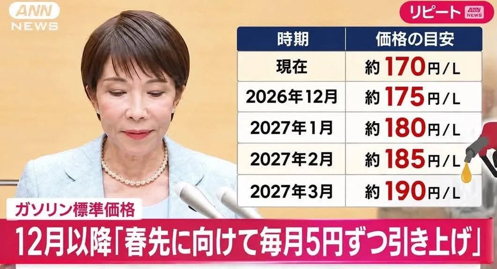

일본인들 여론은 문자 그대로 대폭발하는 중.

일본인들 여론은 문자 그대로 대폭발하는 중.
끓는물 개구리 테스트하듯이 착실하게 올리네 ㅋㅋ
이여얼 어디서 저런 애미뒤짐 정책을 생각하고 그걸 입 밖에 낼 수 있는거지?ㅋㅋㅋㅋㅋ

그런데 시장충격을 제어하기 위해선 어쩔수 없는거 아닌가 ㅋㅋㅋㅋㅋㅋ 그냥 내비두면 세금이 감당하기 힘들거고 보조금 끊으면 내수경제 개작살날꺼고. 전쟁 일으킨 노머고를 원망해야지...
日, 재정부담에 휘발유 보조금 단계적 축소…12월부터 매달 5엔씩
니혼게이자이신문 등에 따르면 다카이치 사나에 일본 총리는 전날 총리 관저에서 기자단에 휘발유 가격을 억제하기 위해 설정한 기준가격을 매달 리터당 5엔씩 단계적으로 인상하겠다고 밝혔다.
보조금을 줄인다는 내용인듯..?
ㅇㅇ 그건 이해했음. 석유 가격 인상으로 인한 충격을 완화하기 위해 어쩔수 없는 조치 아닌가해서.
일본 돈이 없잖아. 멀 하긴 해야해
일본 총리의 오망꼬 댄스?

우리보다는 아직도 싸다는게 웃기다
보조금을 얼마나 많이 줬던거지
일본 휘발유 그동안 너무 싸긴했어... 우리나라도 이만큼 올랐는데 일본은 안오른게 이상했던것
다카이치가 다른건 몰라도 시진핑이랑 강대강 대치로 지지율 빨아서 조기총선 승리한건 판단 잘했지
일본의 예상 외로 ㄹㅇ 삔또나간 중국이 희토류 수출 전면 중단하는 빠따를 들 줄은 몰랐겠다만
아직도 트럼프보고 중국에 희토류 제한 풀어달라고 발언해달란 로비밖에 안하는거 보면 ㄹㅇ 답 없어 보임
언제까지 빚잔치 할 건데 ㅋㅋㅋㅋ
보조금의 함정
매월? 언제까지라고 한도는 놓고 올리는거겠지?
10월에 갔는데 평균적으로 162엔이더라 ㅈㄴ 싸던데
저번주에 갔는데 싼덴 157엔 ㅋㅋ 리터에 1330원은 무슨 20년전도 아니고 ㅋㅋ
ㄹㅇ 싼데는 그 정도고 도시 안에는 한 173엔? 그래도 ㅈㄴ 싸 ㄹㅇ ㅋㅋㅋㅋㅋ
좀 사와야겠다ㄷㄷ
일본 기름값 쥰내 싸다했는데 보조금이 있었어?
일본주유소는 신기한게 아직도 주유원이 3~4명씩있더라 어케유지하냐
저러면 연쇄적으로 물가도 오르겠지 ?